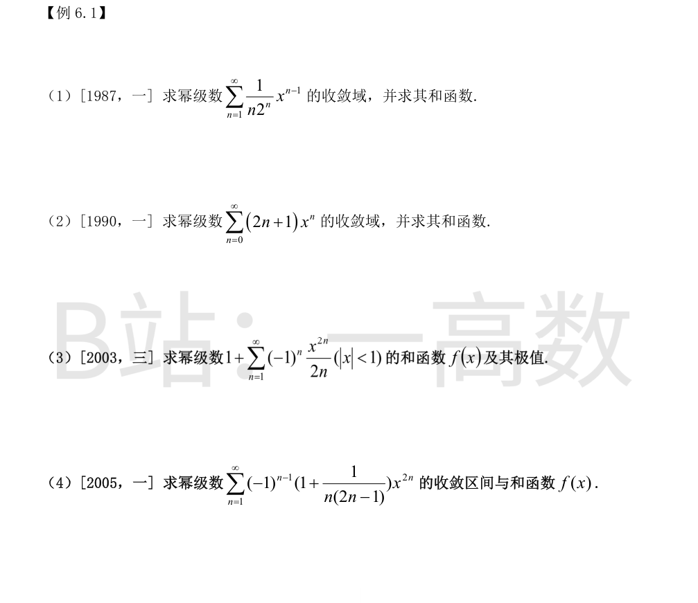
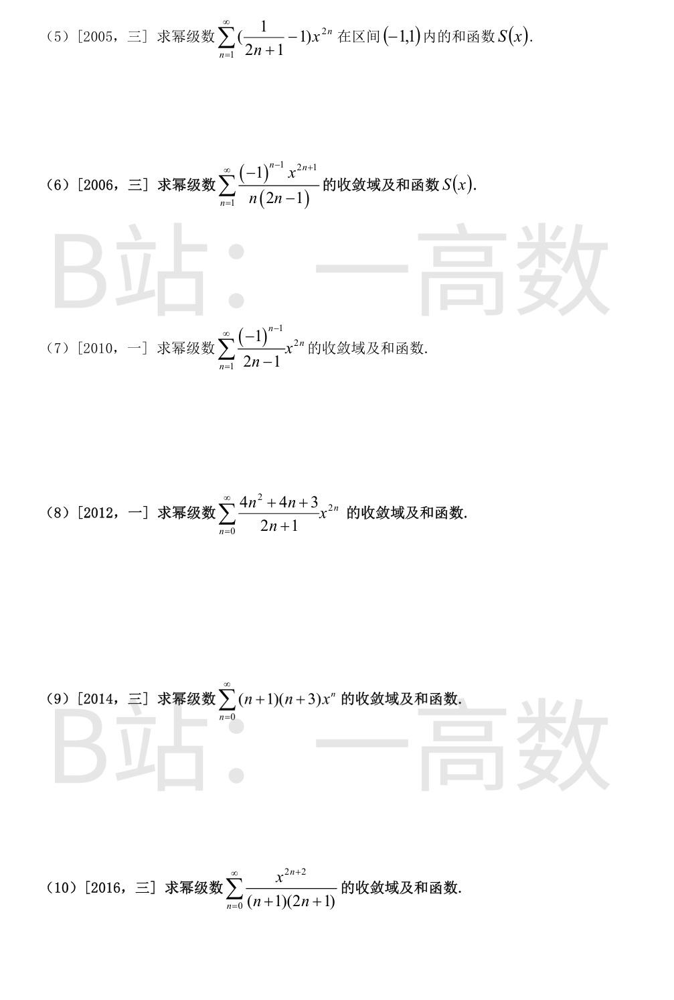
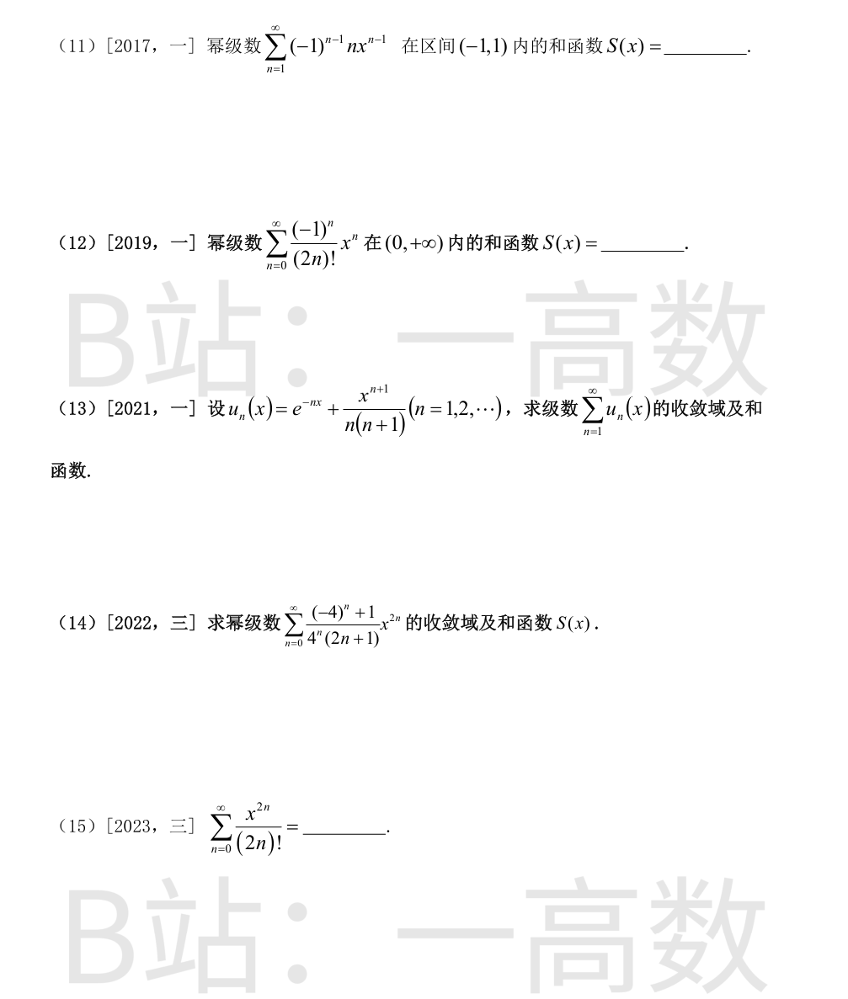
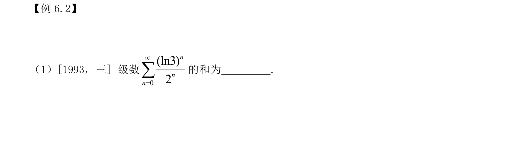
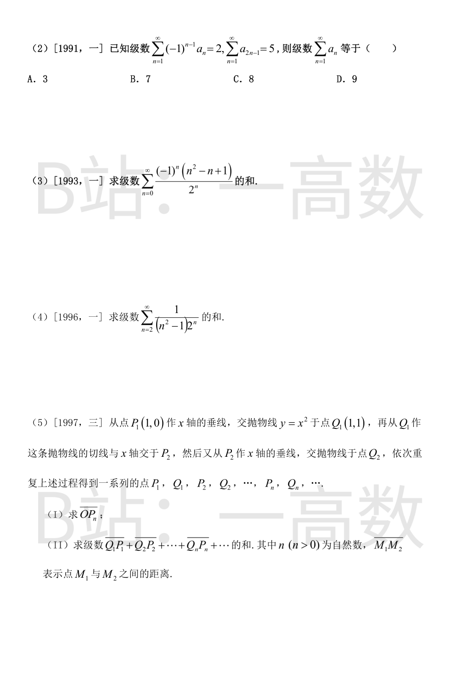
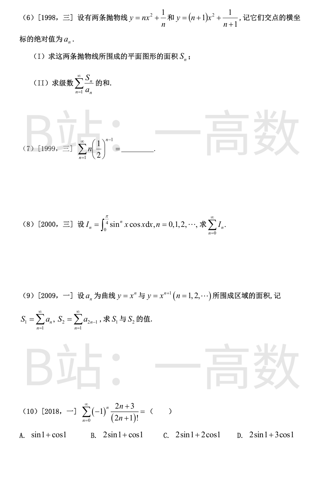
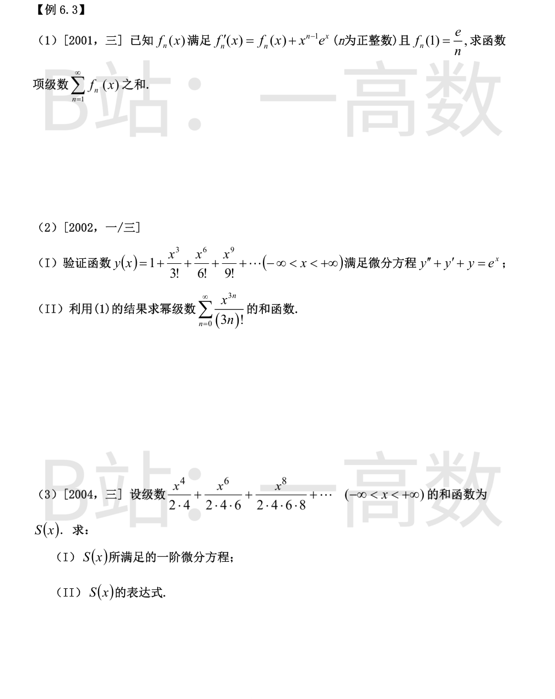
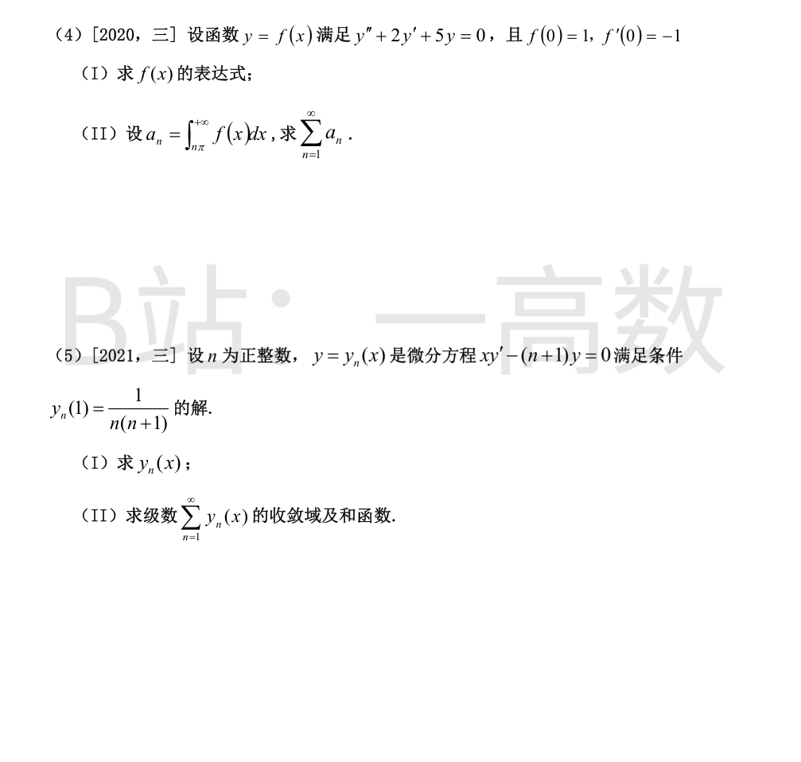
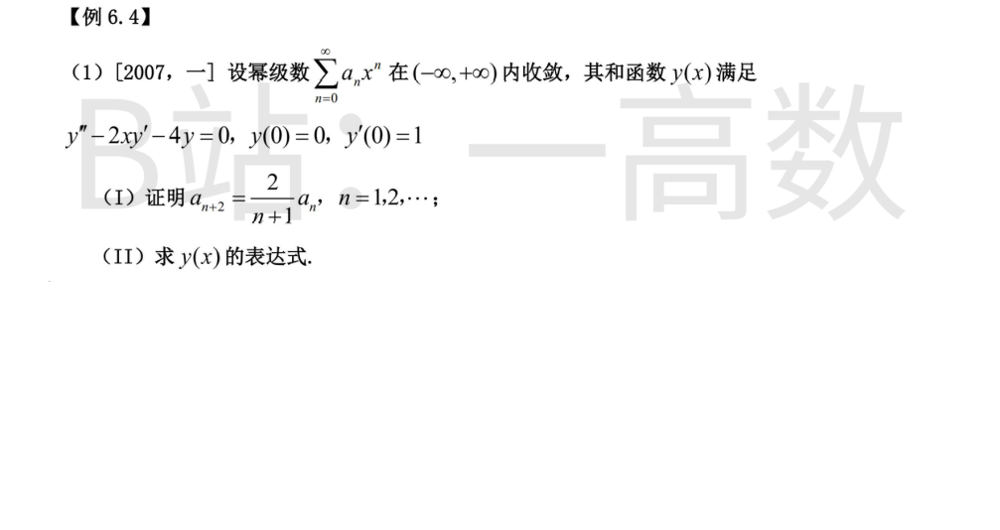

系数 a_n = 1/(n·2^n)，lim |a_{n+1}/a_n| = lim (n·2^n)/((n+1)·2^{n+1}) = 1/2，收敛半径 R = 2。
端点：x = 2 时级数为 Σ 1/(2n)，发散；x = -2 时级数为 Σ (-1)^{n-1}/(2n)，由莱布尼茨判别法收敛。
故收敛域为 [-2, 2)。
当 x ≠ 0 时：
$$xS(x)=\sum_{n=1}^{\infty}\frac{1}{n}\Big(\frac{x}{2}\Big)^n=-\ln\Big(1-\frac{x}{2}\Big)$$
于是 S(x) = -\frac{1}{x}\ln(1-\frac{x}{2})（x≠0），而 S(0) = \lim_{x\to 0}\left(-\frac{\ln(1-x/2)}{x}\right) = \frac{1}{2}。
lim (2n+1)/(2n+3) = 1，R = 1；x = ±1 时通项 (2n+1)(±1)^n 不趋于 0，发散。收敛域 (-1,1)。
$$\sum_{n=0}^{\infty}(2n+1)x^n=2\sum_{n=1}^{\infty}nx^n+\sum_{n=0}^{\infty}x^n=\frac{2x}{(1-x)^2}+\frac{1}{1-x}=\frac{1+x}{(1-x)^2}$$
（用了 Σ n x^n = x/(1-x)^2，Σ x^n = 1/(1-x)。）
在 |x|<1 内逐项求导：
$$f'(x)=\sum_{n=1}^{\infty}(-1)^n x^{2n-1}=-x\sum_{n=1}^{\infty}(-1)^{n-1}(x^2)^{n-1}=-\frac{x}{1+x^2}$$
积分（f(0)=1）：
$$f(x)=1-\int_0^x\frac{t}{1+t^2}\,dt=1-\frac{1}{2}\ln(1+x^2)$$
极值：f'(x) = -x/(1+x²)，x<0 时 f'>0，x>0 时 f'<0，故 f 在 x=0 取极大值 f(0)=1；无极小值。
系数趋于 1 且只有偶次幂，收敛半径 R=1，收敛区间 (-1,1)。
拆两部分。第一部分：
$$\sum_{n=1}^{\infty}(-1)^{n-1}x^{2n}=\frac{x^2}{1+x^2}$$
第二部分记 g(x)=Σ (-1)^{n-1} x^{2n}/(n(2n-1))，则
$$g'(x)=2\sum_{n=1}^{\infty}\frac{(-1)^{n-1}x^{2n-1}}{2n-1},\qquad g''(x)=2\sum_{n=1}^{\infty}(-1)^{n-1}x^{2n-2}=\frac{2}{1+x^2}$$
积分（g(0)=g'(0)=0）：g'(x)=2\arctan x，g(x)=2\int_0^x\arctan t\,dt=2x\arctan x-\ln(1+x^2)。
故
$$f(x)=\frac{x^2}{1+x^2}+2x\arctan x-\ln(1+x^2),\quad x\in(-1,1)$$
$$\sum_{n=1}^{\infty}\frac{x^{2n}}{2n+1}=\frac{1}{x}\left[\sum_{n=0}^{\infty}\frac{x^{2n+1}}{2n+1}-x\right]=\frac{1}{x}\left[\frac{1}{2}\ln\frac{1+x}{1-x}-x\right]$$
（用 Σ_{n≥0} x^{2n+1}/(2n+1) = \frac{1}{2}\ln\frac{1+x}{1-x}，0<|x|<1。）
又 Σ_{n=1}^∞ x^{2n} = \frac{x^2}{1-x^2}。两部分相减：
$$S(x)=\frac{1}{2x}\ln\frac{1+x}{1-x}-1-\frac{x^2}{1-x^2},\quad 0<|x|<1$$
x=0 时原级数每项含 x^{2n}(n≥1) 均为 0，故 S(0)=0（与上式取极限一致）。
系数 1/(n(2n-1))，相邻比值趋于 1，R=1；x=±1 时 Σ 1/(n(2n-1)) 与 1/n² 比较知绝对收敛。收敛域 [-1,1]。
记 S(x) = x·h(x)，其中 h(x)=Σ (-1)^{n-1}x^{2n}/(n(2n-1))。对 h 两次求导：
$$h''(x)=2\sum_{n=1}^{\infty}(-1)^{n-1}x^{2n-2}=\frac{2}{1+x^2}\ \Rightarrow\ h'(x)=2\arctan x\ \Rightarrow\ h(x)=2x\arctan x-\ln(1+x^2)$$
故
$$S(x)=2x^2\arctan x-x\ln(1+x^2),\quad x\in[-1,1]$$
（验证：x=1 时 S(1)=\frac{\pi}{2}-\ln 2，与 Σ(-1)^{n-1}/(n(2n-1))=\ln 2+\frac{\pi}{2} 一致……实际部分分式给出 1/(n(2n-1))=-1/n+2/(2n-1)，和为 ln2+π/2，相符。）
R=1；x=±1 时为交错级数 Σ(-1)^{n-1}/(2n-1)，由莱布尼茨判别法收敛。收敛域 [-1,1]。
由 arctan x = Σ_{n=1}^∞ (-1)^{n-1} x^{2n-1}/(2n-1)（|x|≤1），提取因子 x：
$$S(x)=x\sum_{n=1}^{\infty}\frac{(-1)^{n-1}x^{2n-1}}{2n-1}=x\arctan x,\quad x\in[-1,1]$$
因 4n²+4n+3=(2n+1)²+2，故系数 (4n²+4n+3)/(2n+1) = (2n+1) + 2/(2n+1)。
收敛域：通项系数 ~2n，x=±1 时发散，收敛域 (-1,1)。
第一部分：
$$\sum_{n=0}^{\infty}(2n+1)x^{2n}=\left(\frac{x}{1-x^2}\right)'=\frac{1+x^2}{(1-x^2)^2}$$
第二部分（x≠0）：
$$2\sum_{n=0}^{\infty}\frac{x^{2n}}{2n+1}=\frac{2}{x}\sum_{n=0}^{\infty}\frac{x^{2n+1}}{2n+1}=\frac{1}{x}\ln\frac{1+x}{1-x}$$
（x=0 时该部分值为 2。）
$$S(x)=\frac{1+x^2}{(1-x^2)^2}+\frac{1}{x}\ln\frac{1+x}{1-x}\ (0<|x|<1),\qquad S(0)=1+2=3$$
（验证展开：S = 3 + 11x²/3 + …，与级数前两项 3 + 11x²/3 一致。）
R=1，x=±1 时通项趋于无穷，发散，收敛域 (-1,1)。
(n+1)(n+3)=n²+4n+3，用 Σx^n=1/(1-x)、Σnx^n=x/(1-x)²、Σn²x^n=x(1+x)/(1-x)³：
$$S(x)=\frac{x(1+x)}{(1-x)^3}+\frac{4x}{(1-x)^2}+\frac{3}{1-x}$$
通分至 (1-x)³，分子 = (x+x²)+(4x-4x²)+(3-6x+3x²) = 3-x。故
$$S(x)=\frac{3-x}{(1-x)^3},\quad x\in(-1,1)$$
（验证：3+8x+15x²+…，与 (n+1)(n+3) 前几项 3, 8, 15 一致。）
R=1；x=±1 时 Σ 1/((n+1)(2n+1)) 与 1/n² 比较收敛。收敛域 [-1,1]。
逐项求导（|x|<1 内）：
$$S'(x)=\sum_{n=0}^{\infty}\frac{2(n+1)x^{2n+1}}{(n+1)(2n+1)}=2\sum_{n=0}^{\infty}\frac{x^{2n+1}}{2n+1}=\ln\frac{1+x}{1-x}$$
积分（S(0)=0）：
$$S(x)=\int_0^x\left[\ln(1+t)-\ln(1-t)\right]dt=(1+x)\ln(1+x)-x+(1-x)\ln(1-x)+x$$
$$\boxed{S(x)=(1+x)\ln(1+x)+(1-x)\ln(1-x)},\quad x\in[-1,1]$$
（x=±1 处取极限值 2ln2，与 Σ1/((n+1)(2n+1))=2ln2 一致。）
Σ n u^{n-1} = 1/(1-u)²（|u|<1）。令 u = -x：
$$S(x)=\sum_{n=1}^{\infty}n(-x)^{n-1}=\frac{1}{(1+x)^2},\quad x\in(-1,1)$$
对 x>0 写 x=(√x)²：
$$S(x)=\sum_{n=0}^{\infty}\frac{(-1)^n(\sqrt{x})^{2n}}{(2n)!}=\cos\sqrt{x},\quad x\in(0,+\infty)$$
Σ e^{-nx} 是公比 e^{-x} 的等比级数，仅当 x>0 时收敛；
Σ x^{n+1}/(n(n+1))：系数趋于 1/n²，R=1，x=1 时 Σ1/(n(n+1))=1 收敛，x=-1 也（绝对）收敛，收敛域 [-1,1]。
故原级数收敛域为交集 (0,1]。
$$\sum_{n=1}^{\infty}e^{-nx}=\frac{e^{-x}}{1-e^{-x}}=\frac{1}{e^x-1}$$
第二部分用 1/(n(n+1))=1/n-1/(n+1) 与 Σ x^n/n = -ln(1-x)：
$$\sum_{n=1}^{\infty}\frac{x^{n+1}}{n}-\sum_{n=1}^{\infty}\frac{x^{n+1}}{n+1}=-x\ln(1-x)-\left[-\ln(1-x)-x\right]=(1-x)\ln(1-x)+x$$
$$S(x)=\frac{1}{e^x-1}+(1-x)\ln(1-x)+x,\quad x\in(0,1]$$
拆分：[(-4)^n+1]/(4^n(2n+1)) = (-1)^n/(2n+1) + (1/4^n)/(2n+1)。
第一部分 Σ(-1)^n x^{2n}/(2n+1) 收敛域 |x|≤1；第二部分 Σ (x/2)^{2n}/(2n+1) 需 |x/2|<1（x=±2 时调和发散），即 |x|<2。故收敛域为 [-1,1]。
求和（x≠0）：
$$\sum_{n=0}^{\infty}\frac{(-1)^n x^{2n}}{2n+1}=\frac{1}{x}\arctan x$$
$$\sum_{n=0}^{\infty}\frac{(x/2)^{2n}}{2n+1}=\frac{2}{x}\cdot\frac{1}{2}\ln\frac{1+x/2}{1-x/2}=\frac{1}{x}\ln\frac{2+x}{2-x}$$
$$S(x)=\frac{1}{x}\left[\arctan x+\ln\frac{2+x}{2-x}\right],\quad 0<|x|\le1;\qquad S(0)=1+1=2$$
（验证展开：S=2-x²/4+…，与级数前两项 2-x²/4 一致。）
与 e^x = Σ x^n/n! 比较，取出偶数次幂项：
$$\sum_{n=0}^{\infty}\frac{x^{2n}}{(2n)!}=\frac{e^x+e^{-x}}{2}=\cosh x$$
【仲裁修正】独立校验发现分歧，经仲裁重解，以本答案为准：原题为 [2023,三] 求 Σ_{n=0}^∞ x^{2n}/(2n)! 的和函数，正确答案 cosh x=(e^x+e^{-x})/2（solver、B 均对）；A 写成 cosh√x=(e^{√x}+e^{-√x})/2，那是 Σ x^n/(2n)! 的和函数，自变量多套了一层根号，属实质错误。



公比 q = ln3/2 的等比级数：
$$\sum_{n=0}^{\infty}\left(\frac{\ln 3}{2}\right)^n=\frac{1}{1-\frac{\ln3}{2}}=\frac{2}{2-\ln 3}$$
记奇数项和 A=Σa_{2n-1}=5，偶数项和 B=Σa_{2n}。
Σ(-1)^{n-1}a_n = A - B = 2 ⟹ B = 3。
故 Σa_n = A + B = 8，选 C。
设 φ(x)=Σ_{n=0}^∞ (n²-n+1)x^n（|x|<1）。用
$$\sum nx^n=\frac{x}{(1-x)^2},\qquad \sum n^2x^n=\frac{x(1+x)}{(1-x)^3},\qquad \sum x^n=\frac{1}{1-x}$$
$$\varphi(x)=\frac{x(1+x)}{(1-x)^3}-\frac{x}{(1-x)^2}+\frac{1}{1-x}$$
代入 x=-1/2（1-x=3/2）：
$$\varphi\left(-\frac12\right)=\frac{-\frac14}{\frac{27}{8}}-\frac{-\frac12}{\frac94}+\frac{2}{3}=-\frac{2}{27}+\frac{6}{27}+\frac{18}{27}=\frac{22}{27}$$
设 S(x)=Σ_{n=2}^∞ x^n/(n²-1)（|x|<1），所求为 S(1/2)。由
$$\frac{1}{n^2-1}=\frac12\left(\frac{1}{n-1}-\frac{1}{n+1}\right)$$
$$\sum_{n=2}^{\infty}\frac{x^n}{n-1}=x\sum_{m=1}^{\infty}\frac{x^m}{m}=-x\ln(1-x)$$
$$\sum_{n=2}^{\infty}\frac{x^n}{n+1}=\frac{1}{x}\left[-\ln(1-x)-x-\frac{x^2}{2}\right]$$
$$S(x)=\frac12\left[\left(\frac1x-x\right)\ln(1-x)+1+\frac{x}{2}\right]$$
代入 x=1/2：S(1/2) = \frac12\left[\frac32\cdot(-\ln2)+\frac54\right] = \frac58-\frac34\ln 2。
(I) 设 P_n=(p,0)，则 Q_n=(p,p²)。抛物线在 Q_n 处切线斜率 2p，切线 y-p²=2p(x-p)。令 y=0 得 x=p/2，即
$$x_{P_{n+1}}=\frac{1}{2}x_{P_n},\qquad x_{P_1}=1\ \Rightarrow\ x_{P_n}=\left(\frac12\right)^{n-1}$$
故 \overline{OP_n} = (1/2)^{n-1}。
(II) Q_nP_n 为竖直线段，长度 = Q_n 的纵坐标 = p² = (1/4)^{n-1}：
$$\sum_{n=1}^{\infty}\overline{Q_nP_n}=\sum_{n=1}^{\infty}\left(\frac14\right)^{n-1}=\frac{1}{1-\frac14}=\frac43$$
联立：nx²+1/n=(n+1)x²+1/(n+1) ⟹ x² = 1/(n(n+1))，故 a_n = 1/\sqrt{n(n+1)}。
(I) 在 (-a_n, a_n) 上 y=nx²+1/n 在上（比较 x=0 处值 1/n > 1/(n+1)）：
$$S_n=2\int_0^{a_n}\left[\frac{1}{n(n+1)}-x^2\right]dx=2\left[\frac{a_n}{n(n+1)}-\frac{a_n^3}{3}\right]=\frac{4}{3}a_n^3=\frac{4}{3[n(n+1)]^{3/2}}$$
（因 a_n² = 1/(n(n+1))，中括号内 = a_n³ - a_n³/3。）
(II)
$$\frac{S_n}{a_n}=\frac43 a_n^2=\frac{4}{3n(n+1)}\ \Rightarrow\ \sum_{n=1}^{\infty}\frac{S_n}{a_n}=\frac43\sum_{n=1}^{\infty}\left(\frac1n-\frac{1}{n+1}\right)=\frac43$$
$$\sum_{n=1}^{\infty}nq^{n-1}=\frac{1}{(1-q)^2},\quad q=\frac12\ \Rightarrow\ \sum_{n=1}^{\infty}n\left(\frac12\right)^{n-1}=\frac{1}{(1/2)^2}=4$$
凑微分：令 u=sin x，
$$I_n=\int_0^{\pi/4}\sin^nx\,d(\sin x)=\frac{\sin^{n+1}x}{n+1}\Big|_0^{\pi/4}=\frac{1}{n+1}\left(\frac{\sqrt2}{2}\right)^{n+1}$$
记 q=√2/2：
$$\sum_{n=0}^{\infty}I_n=\sum_{m=1}^{\infty}\frac{q^m}{m}=-\ln(1-q)=\ln\frac{1}{1-\frac{\sqrt2}{2}}=\ln(2+\sqrt2)$$
（因 1/(1-√2/2)=2/(2-√2)=2+√2。）
在 (0,1) 上 x^n > x^{n+1}：
$$a_n=\int_0^1(x^n-x^{n+1})\,dx=\frac{1}{n+1}-\frac{1}{n+2}=\frac{1}{(n+1)(n+2)}$$
$$S_1=\sum_{n=1}^{\infty}\left(\frac{1}{n+1}-\frac{1}{n+2}\right)=\frac12$$
$$S_2=\sum_{n=1}^{\infty}a_{2n-1}=\sum_{n=1}^{\infty}\left(\frac{1}{2n}-\frac{1}{2n+1}\right)=\frac12-\frac13+\frac14-\frac15+\cdots=1-\ln 2$$
（由 ln2 = 1-1/2+1/3-1/4+… 移项即得。）
拆分子：2n+3=(2n+1)+2：
$$\frac{2n+3}{(2n+1)!}=\frac{1}{(2n)!}+\frac{2}{(2n+1)!}$$
$$\sum_{n=0}^{\infty}\frac{(-1)^n}{(2n)!}=\cos 1,\qquad \sum_{n=0}^{\infty}\frac{(-1)^n}{(2n+1)!}=\sin 1$$
故和 = cos1 + 2sin1，选 B。


一阶线性方程两边乘 e^{-x}：
$$\left(e^{-x}f_n(x)\right)'=e^{-x}f_n'(x)-e^{-x}f_n(x)=x^{n-1}$$
积分：e^{-x}f_n(x) = x^n/n + C，即 f_n(x)=e^x(x^n/n+C)。由 f_n(1)=e(1/n+C)=e/n 得 C=0，故
$$f_n(x)=\frac{e^x x^n}{n}$$
于是
$$\sum_{n=1}^{\infty}f_n(x)=e^x\sum_{n=1}^{\infty}\frac{x^n}{n}=-e^x\ln(1-x)$$
Σ x^n/n 的收敛域为 [-1,1)，故和函数定义域为 [-1,1)。
(I) 对任意 x 逐项求导（收敛半径 ∞）：
$$y=\sum_{n=0}^{\infty}\frac{x^{3n}}{(3n)!},\quad y'=\sum_{n=1}^{\infty}\frac{x^{3n-1}}{(3n-1)!},\quad y''=\sum_{n=1}^{\infty}\frac{x^{3n-2}}{(3n-2)!}$$
y 含 0,3,6,… 次幂，y'' 含 1,4,7,… 次幂，y' 含 2,5,8,… 次幂，三者恰好不重不漏地拼成全部非负次幂，每个系数均为 1/m!：
$$y''+y'+y=\sum_{m=0}^{\infty}\frac{x^m}{m!}=e^x$$
(II) 由 (I)，所求和函数是初值问题 y''+y'+y=e^x，y(0)=1（级数首项），y'(0)=0（y' 各项含正幂）的解。
特征方程 r²+r+1=0，r=-1/2±(√3/2)i；特解 y*=e^x/3。通解：
$$y=e^{-x/2}\left(C_1\cos\frac{\sqrt3}{2}x+C_2\sin\frac{\sqrt3}{2}x\right)+\frac13 e^x$$
y(0)=C_1+1/3=1 ⟹ C_1=2/3；
y'(0)=-\frac12 C_1+\frac{\sqrt3}{2}C_2+\frac13=0 ⟹ C_2=0。
$$\sum_{n=0}^{\infty}\frac{x^{3n}}{(3n)!}=\frac{2}{3}e^{-x/2}\cos\frac{\sqrt3}{2}x+\frac{1}{3}e^x,\quad -\infty<x<+\infty$$
S(x)=\sum_{n=1}^{\infty}\frac{x^{2n+2}}{2\cdot4\cdots(2n+2)}=\sum_{n=1}^{\infty}\frac{x^{2n+2}}{2^{n+1}(n+1)!}。
(I) 逐项求导：
$$S'(x)=\sum_{n=1}^{\infty}\frac{(2n+2)x^{2n+1}}{2^{n+1}(n+1)!}=\sum_{n=1}^{\infty}\frac{x^{2n+1}}{2^n n!}$$
而 xS(x)=Σ_{n=1}^∞ x^{2n+3}/(2^{n+1}(n+1)!) 恰为 S'(x) 去掉首项 x³/2 后的部分，故
$$S'(x)-xS(x)=\frac{x^3}{2},\qquad S(0)=0$$
(II) 一阶线性方程，积分因子 e^{-x²/2}：
$$\left(S e^{-x^2/2}\right)'=\frac{x^3}{2}e^{-x^2/2}$$
令 u=x²/2，∫_0^x (t³/2)e^{-t²/2}dt = ∫_0^{x²/2} ue^{-u}du = 1-\left(1+\frac{x^2}{2}\right)e^{-x^2/2}。
$$S(x)=e^{x^2/2}\left[1-\left(1+\frac{x^2}{2}\right)e^{-x^2/2}\right]=e^{x^2/2}-1-\frac{x^2}{2},\quad -\infty<x<+\infty$$
（验证：直接由定义 S(x)=Σ_{k=2}^∞ (x²/2)^k/k! = e^{x²/2}-1-x²/2，一致。）
(I) 特征方程 r²+2r+5=0，r=-1±2i：
$$f(x)=e^{-x}(C_1\cos 2x+C_2\sin 2x)$$
f(0)=C_1=1；f'(0)=-C_1+2C_2=-1 ⟹ C_2=0。故
$$f(x)=e^{-x}\cos 2x$$
(II) 由 \int e^{-x}\cos 2x\,dx=\frac{e^{-x}}{5}(2\sin 2x-\cos 2x)+C（求导验证），且 x→+∞ 时 e^{-x}→0：
$$a_n=\int_{n\pi}^{+\infty}e^{-x}\cos 2x\,dx=0-\frac{e^{-n\pi}}{5}(2\sin 2n\pi-\cos 2n\pi)=\frac{e^{-n\pi}}{5}$$
$$\sum_{n=1}^{\infty}a_n=\frac15\sum_{n=1}^{\infty}e^{-n\pi}=\frac15\cdot\frac{e^{-\pi}}{1-e^{-\pi}}=\frac{1}{5(e^{\pi}-1)}$$
(I) 分离变量：dy/y=(n+1)dx/x ⟹ y=Cx^{n+1}。由 y_n(1)=1/(n(n+1)) 得 C=1/(n(n+1))：
$$y_n(x)=\frac{x^{n+1}}{n(n+1)}$$
(II) 系数 ~1/n²，R=1；x=1 时 Σ1/(n(n+1))=1 收敛，x=-1 时绝对收敛。收敛域 [-1,1]。
用 1/(n(n+1))=1/n-1/(n+1) 与 Σx^n/n=-ln(1-x)：
$$\sum_{n=1}^{\infty}\frac{x^{n+1}}{n(n+1)}=-x\ln(1-x)+\ln(1-x)+x=(1-x)\ln(1-x)+x$$
$$S(x)=(1-x)\ln(1-x)+x,\quad x\in[-1,1]$$
（x=1 时规定 0·ln0=0，S(1)=1，与级数一致。）

(I) 在 R 上逐项求导：
$$y'=\sum_{n=1}^{\infty}na_nx^{n-1},\qquad y''=\sum_{n=2}^{\infty}n(n-1)a_nx^{n-2}=\sum_{n=0}^{\infty}(n+2)(n+1)a_{n+2}x^n$$
代入方程：
$$\sum_{n=0}^{\infty}\left[(n+2)(n+1)a_{n+2}-2na_n-4a_n\right]x^n=0$$
由幂级数解的唯一性（各系数为 0）：
$$(n+2)(n+1)a_{n+2}=2(n+2)a_n\ \Rightarrow\ a_{n+2}=\frac{2}{n+1}a_n,\quad n=0,1,2,\dots$$
特别地对 n=1,2,… 成立。
(II) y(0)=0 ⟹ a_0=0 ⟹ 所有偶系数 a_{2k}=0；y'(0)=1 ⟹ a_1=1。
对奇数链：a_{2k+1} = \frac{2}{2k-1+1}a_{2k-1} = \frac{a_{2k-1}}{k}，递推得
$$a_{2k+1}=\frac{1}{k!}\quad(k=0,1,2,\dots)$$
$$y(x)=\sum_{k=0}^{\infty}\frac{x^{2k+1}}{k!}=x\sum_{k=0}^{\infty}\frac{(x^2)^k}{k!}=xe^{x^2}$$
【仲裁修正】独立校验发现分歧，经仲裁重解，以本答案为准：原题为 [2007,一] y''-2xy'-4y=0, y(0)=0, y'(0)=1，(II) 奇次项系数应为 a_{2k+1}=1/k!，即 y=x+\sum_{k=0}^{\infty}x^{2k+1}/k!=xe^{x^2}；B 写的系数 2^n/(1·3·5⋯(2n-1)) 不满足递推（x^3 系数 B 为 2，应为 1；x^5 应为 1/2，B 为 4/3），级数实质不同，B 错。